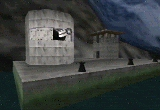

|
.
|
Mysteres
de Goldeneye : Dam |
| Vous
trouverez dans cette Partie presque tous les Mysteres qui entourent
le Barrage ! Pour plus de renseignements sur le Barrage, il y a la
Section Beta ou on en apprend plus
sur les Objectifs supprimés, les Objets disparus etc. Y a aussi
pleins de Codes Action Replay
/ Gameshark. |
| L'Ile
Perdue |
| De
tous les Niveaux de Goldeneye, le Barrage est certainement le plus
vaste, juste après Surface peut-etre. C'est aussi le Niveau
ou on trouve un GRAND Lac, avec au fond une Petite Ile qui ne sert
plus à grand-chose. Voici des Images qui vous montreront ce
que beaucoup ne peuvent pas voir, faute d'Action Replay. Vous trouverez
en Bas des Codes au cas ou vous voudriez aller voir par vous-meme.
|
 |
 |
 |
 |
| On
peut aussi grimper dans la Tour pour admirer le Paysage, même
si y a trop rien à voir. L'image avec Bond (ci-dessous tout
à Droite) peut paraitre truquée, mais en fait elle a
été faite avec le Debug Mode, qui permet de se déplacer
HORS du Corps de Bond. Ahurissant, et celà sert dans pas mal
de Niveaux vous verrez ! Note - En fait, on ne peut pas monter dans
la Tour. On peut passer au travers de TOUT
ce qu'il y a sur l'Ile. Et avec un coup de Moonjump, voilà
les Photos que ça donne
|